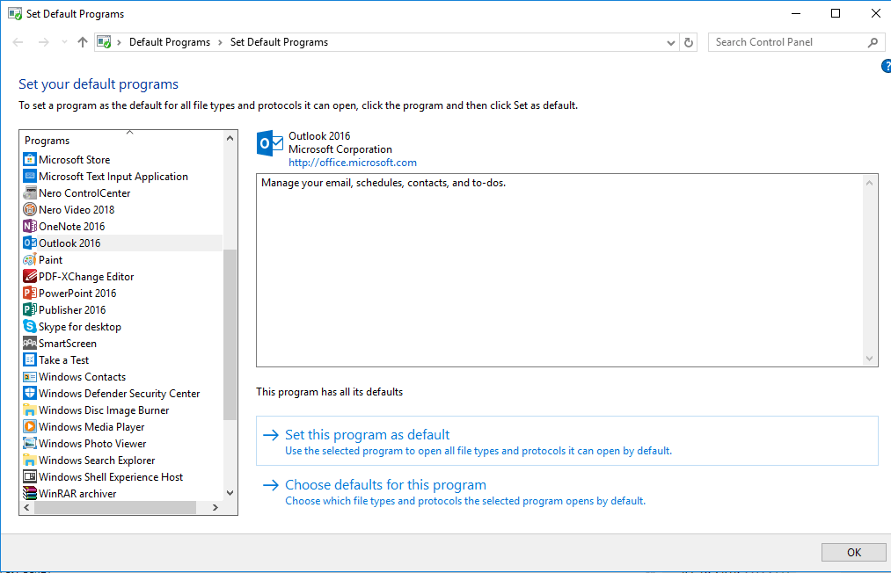

worked like a charm! Thank you
| Classic Shell http://www.classicshell.net/forum/ |
|
| Can I edit the Default Programs Shortcut? http://www.classicshell.net/forum/viewtopic.php?f=7&t=8128 |
Page 1 of 1 |
| Author: | Snappy Phoenix [ Sat Nov 25, 2017 4:25 am ] |
| Post subject: | Can I edit the Default Programs Shortcut? |
Since the Fall Creators Update, the Default Programs now take you to PC Settings after you click "set your default programs" I found out the shortcut which takes you to the old classic default programs menu which is: Code: explorer shell:::{17cd9488-1228-4b2f-88ce-4298e93e0966} -Microsoft.DefaultPrograms\pageDefaultProgram Is there a way to customize Classic Shell's Default Programs link location to the one above so it immediately takes me to the old Default Programs page?  |
|
| Author: | Ivo [ Sat Nov 25, 2017 1:01 pm ] |
| Post subject: | Re: Can I edit the Default Programs Shortcut? |
Go to the Customize Start Menu tab in the settings. From here you can edit the menu items, their look, and what they do. |
|
| Author: | Snappy Phoenix [ Sun Nov 26, 2017 7:13 am ] |
| Post subject: | Re: Can I edit the Default Programs Shortcut? |
worked like a charm! Thank you |
|
| Page 1 of 1 | All times are UTC - 8 hours [ DST ] |
| Powered by phpBB® Forum Software © phpBB Group https://www.phpbb.com/ |
|